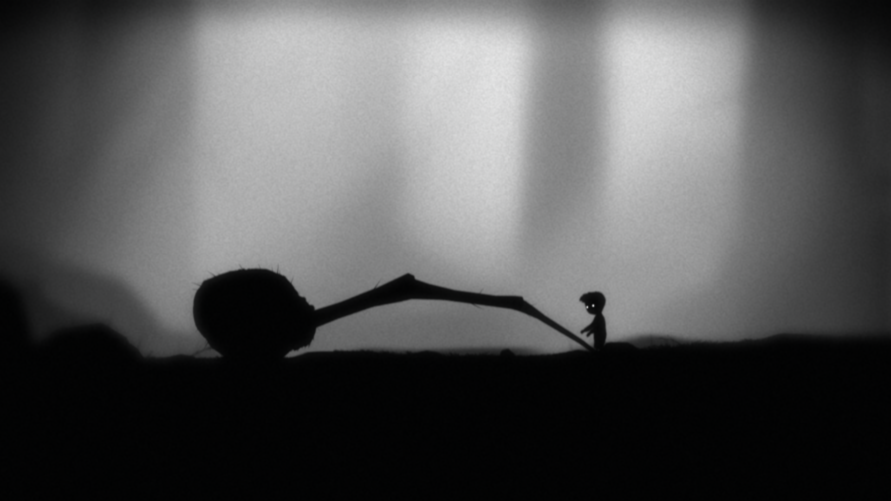
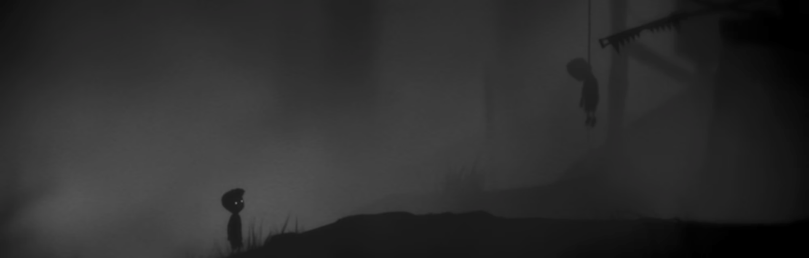
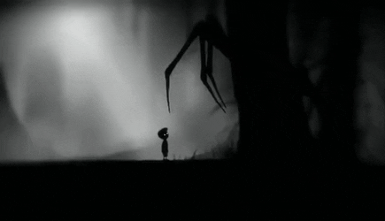

Assignment #1&2
Created by Jyrell Go
I had a lot of free time in the creation of of this assignment website, so I just had some fun with a old CRT TV asthetic. I hope you enjoy your stay!
!DISCLAIMER! All of the code written for this site is all written by me, with references to programming ideas from other people, This website is not in any way stolen and was just for simple experimentation
Image Description
This image depicts the Limbo Boy ripping the final legs of the mother spider so that he could use its body to cross a spiked chasm (very cruel)
Assignment 1: Reflection
Instead of reflecting on the game itself, I want to talk about my experience with the scene that occurred in front of me. Throughout the entire course of the game until now, I saw the stillness of the world, the monsters, and most importantly the other children, out to kill my character. Through these experiences, I thought myself to be playing the role of an innocent boy simply trying to make it out alive.
Due to this, I ended up placing a lot of myself in this boy's actions and motivations, akin to the concept of Lacan's Mirror; but the reason why this scene struck such strong emotion with me is the breaking of that phenomenon.
So now to talk about this scene, what happened here is that the Limbo Boy realized that the only way to cross the spiked chasm is to rip the final leg off the spider and push its corpse into the hole; all to let him jump across. This was something I could not possibly expect the boy to do. No reason or motivation could've possibly justified this action within me, and at that moment it was the first time my reflection in him completely disappeared, in a complete shock, I think I felt forcefully ejected from the mirror phenomenon. It was quite an interesting thing to think about.
Assignment 2: Thesis
Thesis: I believe the personal experience I've had with the game: Mirror Stage, is an essential experience. One that immerses oneself in the world of Limbo, and more importantly, the breaking such a phenomenon, the so-called "Forceful ejection" from the mirror is just as important as the immersion itself.
As a quick summary, Lacan's theory of the mirror stage covers the 6 to 18 months of baby development. It's the exploration of identifying one's self in another. With the concept of "I" and "them" mixed, until development has reached the point where the child can distinguish from both. The concept itself introduces my theories about the differences between oneself and the world and people around them as well as the split between the ego and the body.
It is not an exaggeration to say that immersion is one of the most important parts of Limbo's world, from the very beginning the game makes quite an active effort in order to get you to play the part of the Limbo Boy. Even without playing, one quick snapshot of its atmosphere is enough to let you feel this world.
Just a few examples of this immersion is in the danger that your character gets placed into, as well as the fade-out to black that occurs when your player dies. The dying of the eyes and the fading to black, as no cries from the boy are made, let you feel the cruelness of the world that your character is faced with and gets you rooting for him.
I found that this leads into this mindset of "How would I act in this situation" and once the player is put through something challenging, like running away from a mother spider, that is when the player is the most immersed. It's when fear of dying is the highest, and the cruel anxiety and eariness of the world truly impact not just the Limbo Boy, but the player controlling him.
Now all of these things are merely just observations, but these observations lead to a more interesting conclusion once we start talking about the breaking of the immersion.
While it is ideal that a game such as this one would try to keep its player immersed in its experience for its entirety, even the best games fail to meet such an impossible challenge. Some sections of puzzles or chases won't be able to hook everyone in, due to all players' individual uniqueness, but I think the Limbo developers realized this and took advantage of it.
Through my playthrough of the game, I realized that the developers had attempted to recreate the experience I had described in the first assignment many more times throughout the entire game. And after finishing the game and seeing its very sad ending, I found the answer I was looking for.
"The game makes itself stand out from most immersive narrative games because of how it plays with the immersion of the player, intentionally reconnecting and disconnecting the player from the world that they are experiencing." Here is another example for my Thesis:

In this image, the player is faced with another potentially immersion-breaking situation, in order to move on, you must cruelly crush the children under a mechanical piston, killing them. While it's impossible to assume how the player will react exactly to the very cruel choice. I have a prediction on how most will interpret this.
Either they will just continue, not batting an eye and seeing it like just another puzzle to complete; or have a similar reaction to what I had in the first assignment. What's important to understand is that both of these outcomes are beneficial for one gameplay experience. In the first, the player stays completely immersed in the world, and instead of being more like themselves, they start to jump into the role of the cruel Limbo boy, doing just about anything morally just to move on. While the other outcome is where I want to focus more on.
In this second outcome, the player realizes what they have done, and loses their immersion with the Limbo Boy, covering the events that occurred to me in the first assignment. But there was something important in that reflection that was not covered, what happened after that scene. Well, here's what happened as a result of my "forceful ejection:" The shock from what I've just done makes me start regretting that decision I've made, and while it was horrible to do something like it, it was the only solution to the puzzle. This brings a whole rush of very powerful emotions such as confusion, disgust, and anxiety within my experience of the game. What's even more interesting than the emotions felt, is the fact that I was able to jump so quickly back into being immersed.
Like I spoke earlier, the game makes it very easy to get immersed in, this includes getting reimmersed once you get "forcefully ejected". So with everything considered, the result of getting your immersion broken is that you can quickly get reimmersed in the world.
This creates a very unique gameplay loop as I spoke of earlier, where the game actively tries anything to get you immersed and simultaneously "ejecting" you from the experience to get you to reflect on the choices you had to make to even get there in the first place. This effect is very akin to repeatedly creating the "breaking of the mirror phenomenon", to the complete benefit of the game.
Hewitson, O. (2010, September 13). What does Lacan say about... the mirror stage? – part I. What Does Lacan Say About… The Mirror Stage? Retrieved January 3, 2022, from https://www.lacanonline.com/2010/09/what-does-lacan-say-about-the-mirror-stage-part-i/